pacman::p_load(readr, tidyverse, plotly, ggplot2, tsibble, tseries,
forecast, fable)Prototype: Time Series Forecasting
1 Load Packages
The code below uses p_load() of the Pacman package to check if all the required packages are installed on the laptop. If they are, then they will be launched into the R environment.
| Package | Description |
|---|---|
| tidyverse | A collection of core packages designed for data science used extensively for data preparation and wrangling. |
| tsibble | For tidy temporal data with wrangling tools |
| fable, forecast | A collection of commonly used univariate and multivariate time series forecasting models. |
| tseries | For performing augmented Dickey-Fuller tests to check whether a time series is stationary |
2 Import data
Temperature <- readRDS("data/temperature.rds")
Rainfall <- readRDS("data/rainfall.rds")Combine the datasets and retain the rows (months) that have both rainfall and temperature values.
merged_data <- merge(Temperature, Rainfall,
by = c("Date", "Region", "Station"))
data_ts <- merged_data %>%
group_by(Date) %>%
summarise(AveTemp = mean(MeanTemp),
MaxTemp = max(MaxTemp),
MinTemp = min(MinTemp),
Rainfall = mean(TotalRainfall)) %>%
mutate(YearMonth = yearmonth(Date)) %>%
ungroup()
data_EDA <- data_ts %>%
as_tsibble(index = Date)
data_ts <- data_ts %>%
as_tsibble(index = (YearMonth))
data_region_ts <- merged_data %>%
group_by(Region, Date) %>%
summarise(AveTemp = mean(MeanTemp),
MaxTemp = max(MaxTemp),
MinTemp = min(MinTemp),
Rainfall = mean(TotalRainfall)) %>%
mutate(YearMonth = yearmonth(Date)) %>%
ungroup()3 Exploratory Data Analysis
3.1 Temperature time-series analysis
Let’s break down the temperature time-series analysis to look at the seasonal, trend and residual components.
Show the code
data_ts.ts = ts(data_EDA$AveTemp, frequency = 12)
decomposed <- decompose(data_ts.ts)
# Plot the decomposed components
autoplot(decomposed) +
ggtitle("Decomposition of the Temperature time-series data") +
xlab("Year")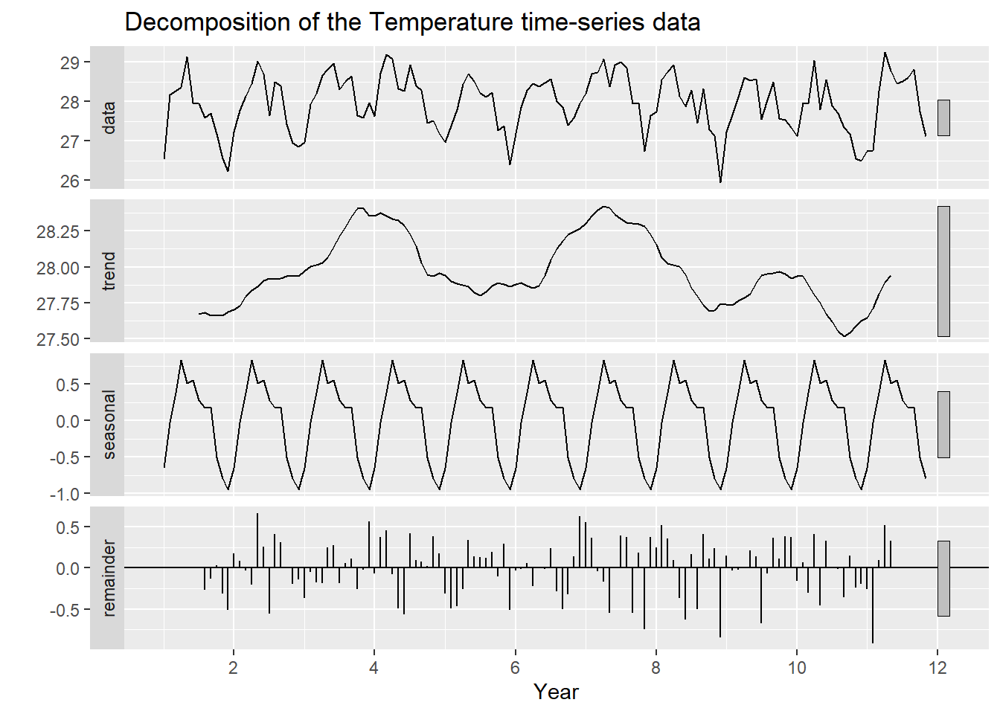
Let’s substract seasonality
Show the code
data_ts.adj <- data_ts.ts - decomposed$seasonal
autoplot(data_ts.adj) +
ggtitle("Decomposition of Temperature time-series data without seasonal components") +
xlab("Year") +
ylab("Temperature")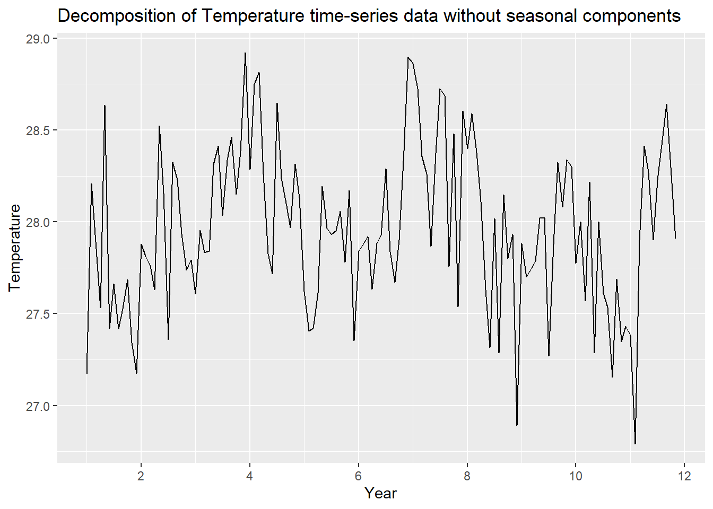
Similarly with trend
Show the code
data_ts.adj <- data_ts.ts - decomposed$trend
autoplot(data_ts.adj) +
ggtitle("Decomposition of Temperature time-series data without trend components") +
xlab("Year") +
ylab("Temperature variation")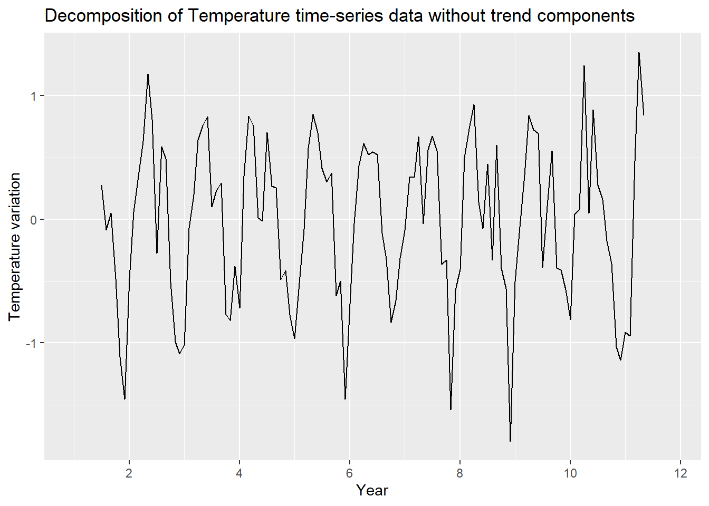
Let’s look at the ACF and PACF plots
ggtsdisplay(difference(data_EDA$AveTemp, 12),
plot_type='partial', lag=36) +
labs(title="Seasonally differenced", y="")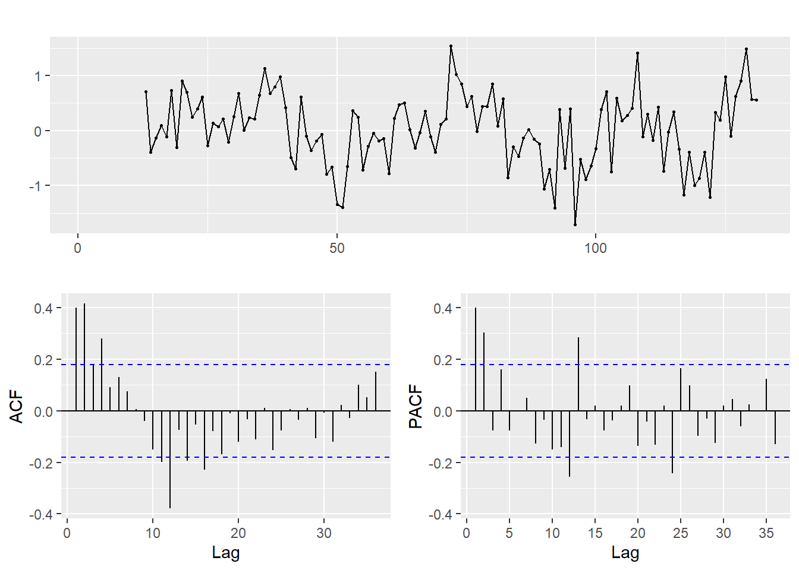
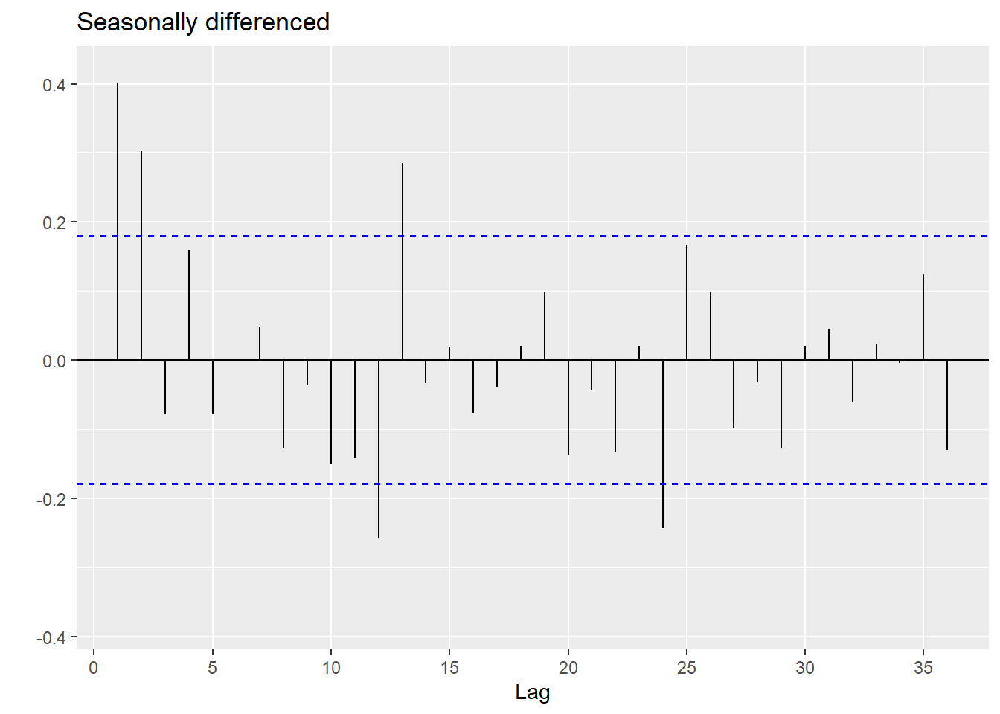
3.2 Rainfall time-series analysis
Let’s break down the rainfall time-series analysis to look at the seasonal, trend and residual components.
Show the code
data_ts.ts = ts(data_EDA$Rainfall, frequency = 12)
decomposed <- decompose(data_ts.ts)
# Plot the decomposed components
autoplot(decomposed) +
ggtitle("Decomposition of the Temperature time-series data") +
xlab("Year")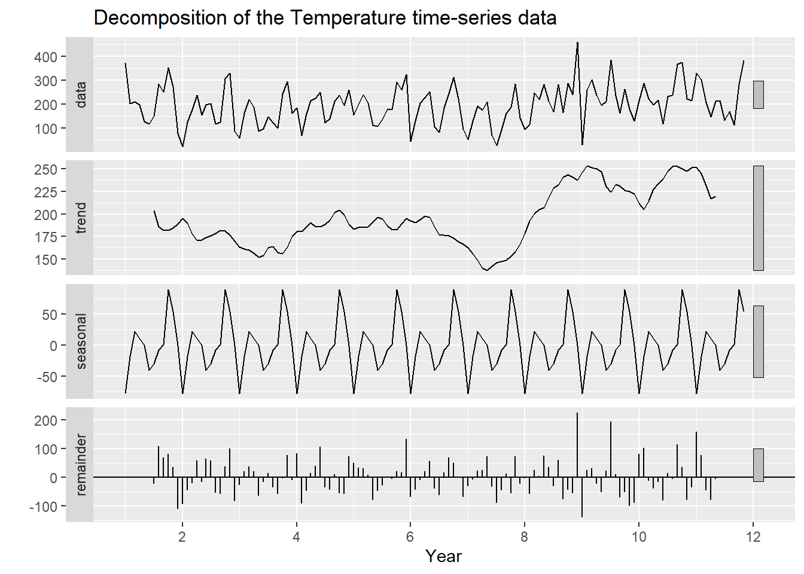
Let’s substract seasonality
Show the code
data_ts.adj <- data_ts.ts - decomposed$seasonal
autoplot(data_ts.adj) +
ggtitle("Decomposition of Rainfall time-series data without seasonal components") +
xlab("Year") +
ylab("Rainfall (mm)")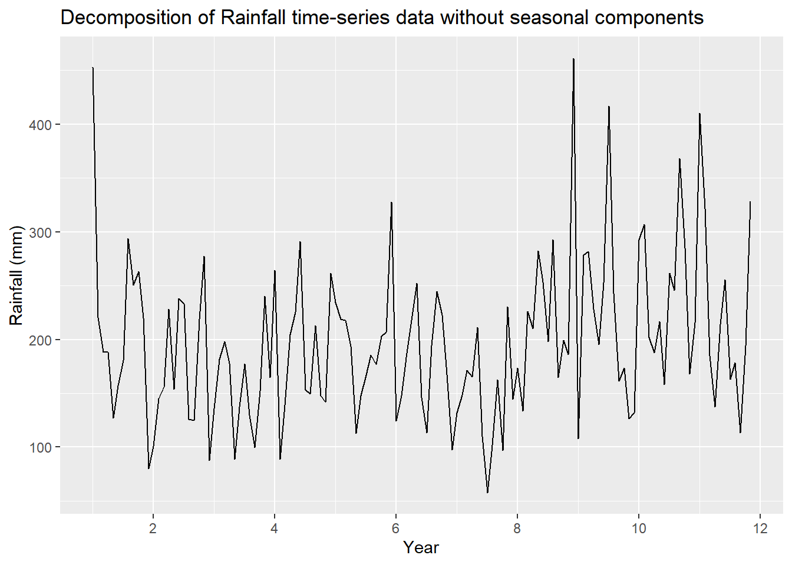
Similarly with trend
Show the code
data_ts.adj <- data_ts.ts - decomposed$trend
autoplot(data_ts.adj) +
ggtitle("Decomposition of Rainfall time-series data without trend components") +
xlab("Year") +
ylab("Rainfall variation (mm)")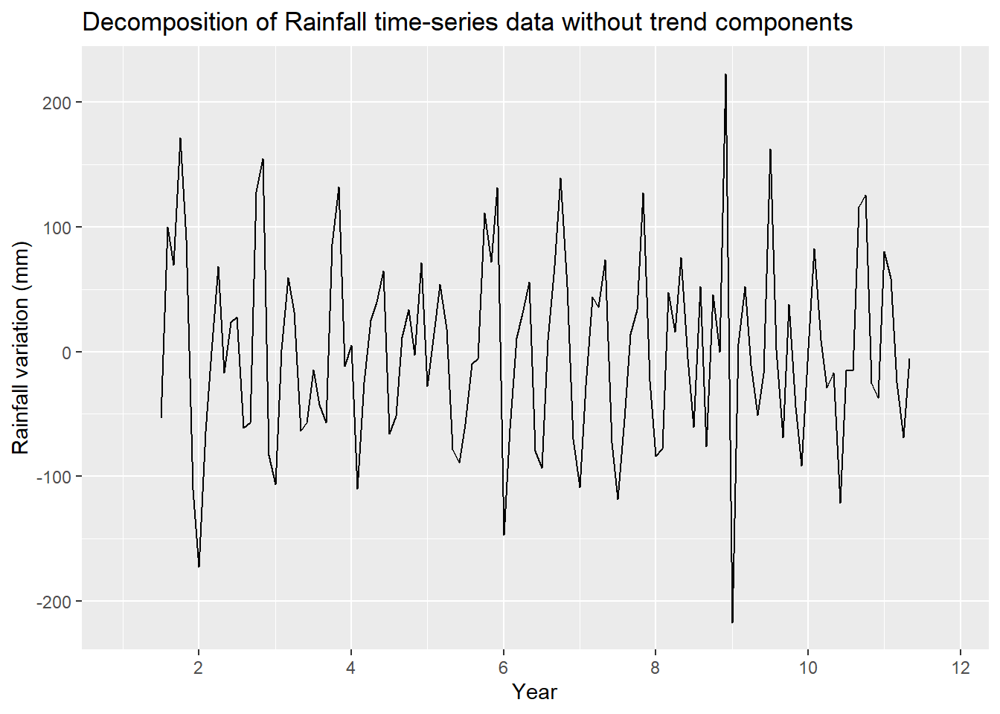
Let’s look at the ACF and PACF plots
Show the code
ggtsdisplay(difference(data_EDA$Rainfall, 12),
plot_type='partial', lag=36) +
labs(title="Seasonally differenced", y="")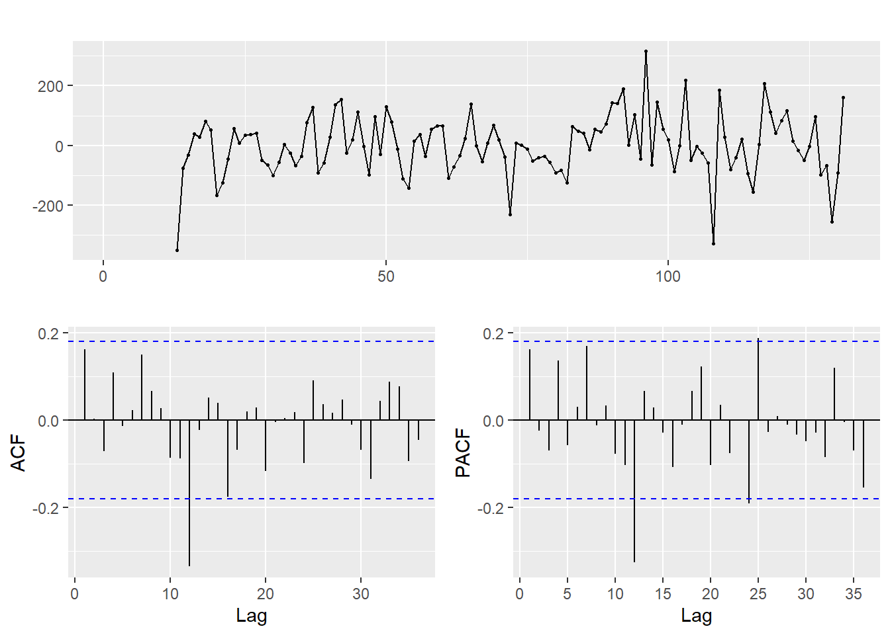
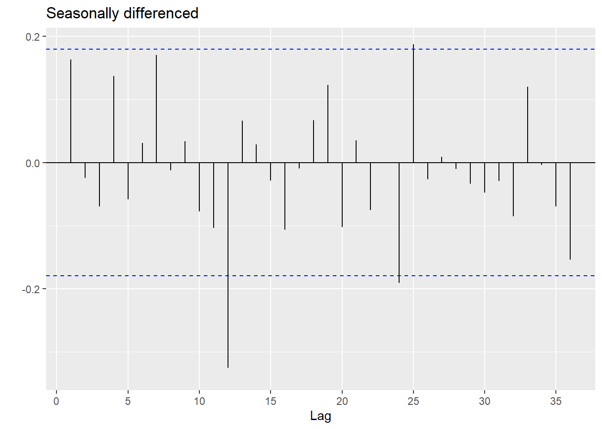
4 UI Design
This section is on the UI design for forecasting temperature and rainfall (univariate) for the next few years.
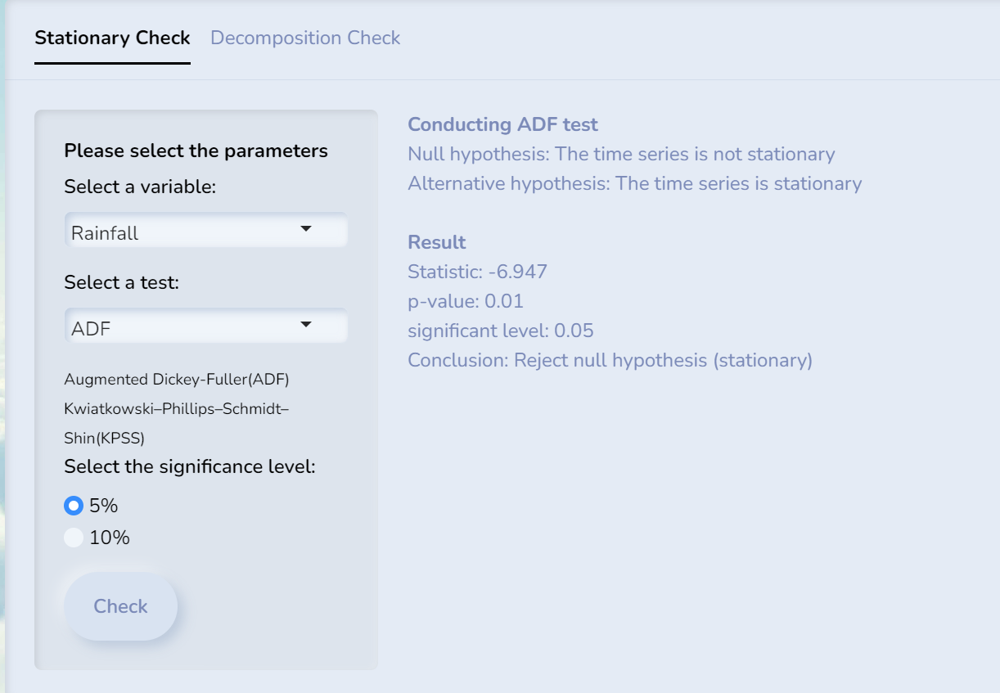
We can also do STL decomposition and ACF checks on the time series data.
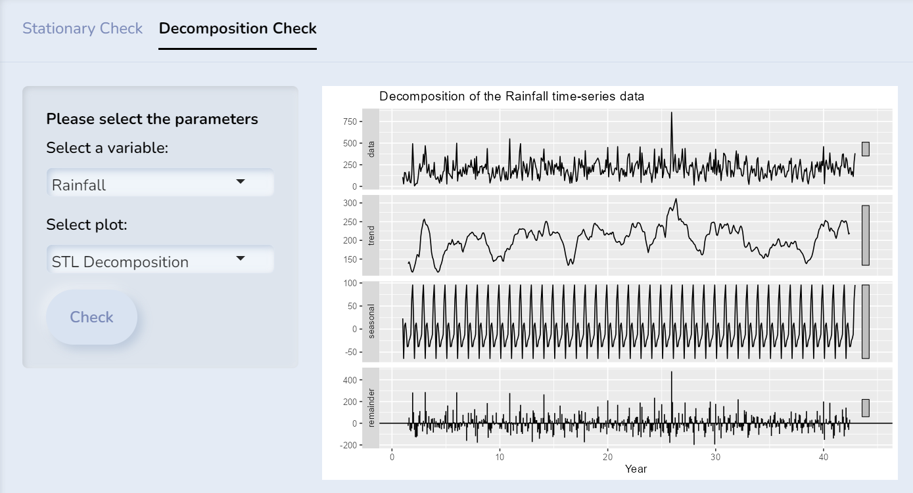
4.2 Forecasting Models
ETS model and its parameters.
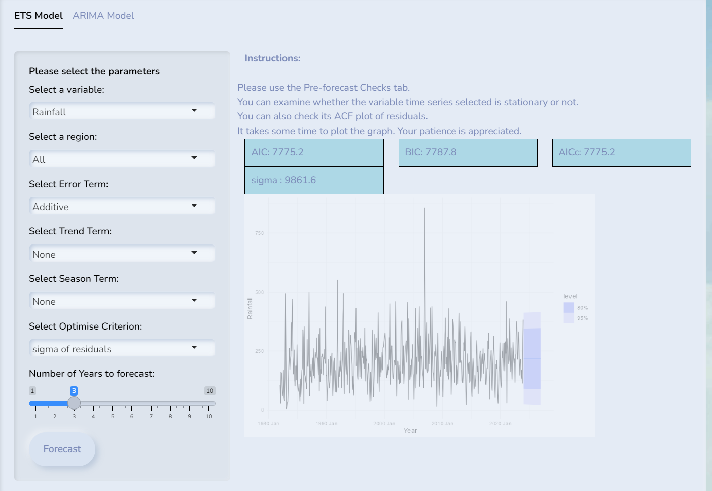
ARIMA model and its parameters
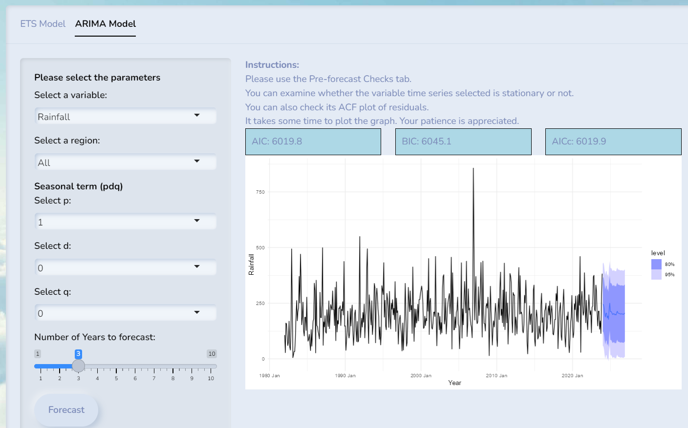
5 Forecasting method
5.1 Forecast using Exponential smoothing state space model
Users can select values for the following:
- 3 components (Error, Trend, Season),
- the optimisation criterion
- the number of forecast years
- the variable (AveTemp, MaxTemp, MinTemp, TotalRain)
- region
Show the code
#input values:
# Error can have additive ("A") or multiplicative ("M")
input_error <- "A"
# Trend can have none ("N"), additive ("A"), damped variants ("Ad")
input_trend <- "A"
# season can have none ("N"), additive ("A") or multiplicative ("M")
# note that multiplicative take a long time to generate
input_season <- "A"
input_forecast_years <- 1
# information criterion to choose the model can be "aicc", "aic", "bic"
# Akaike Information Criterion (AIC), Bayesian Information Criterion (BIC) and Corrected Akaike Information Criterion (AICc)
#sigma", "mae" log-likelihood "lik", "mse" (Mean Square Error), "amse" (Average MSE, "sigma" (Standard deviation of residuals), or "mae" (Mean Absolute Error).
input_opt_crit <- "mae"
# can be "North", "Central", "North-East", "East", "West", "All"
input_region <- "North"
# can be "MaxTemp", "MaxTemp", "MinTemp", "TotalRainfall"
input_variable <- "MaxTemp"
if (input_region != "All") {
data <- data_region_ts %>%
filter(Region == input_region) %>%
as_tsibble(index = (YearMonth))
} else {
data <-data_ts
}
if (input_variable == "Rainfall"){
data <- data %>% rename(Value = Rainfall)
displayText = "Rainfall"
displayUnit = "mm"
} else {
if (input_variable == "MeanTemp") {
data <- data %>% rename(Value = AveTemp)
} else if (input_variable == "MaxTemp") {
data <- data %>% rename(Value = MaxTemp)
} else {
data <- data %>% rename(Value = MinTemp)
}
displayText = "Temperature"
displayUnit = "°C"
}
ets_model <- data %>%
model(ETS(Value ~ error(input_error) +
trend(input_trend) + season(input_season),
opt_crit = input_opt_crit))
#can get the IC and OC values
ets_model %>% glance()# A tibble: 1 × 9
.model sigma2 log_lik AIC AICc BIC MSE AMSE MAE
<chr> <dbl> <dbl> <dbl> <dbl> <dbl> <dbl> <dbl> <dbl>
1 "ETS(Value ~ error(input_e… 0.392 -991. 2015. 2017. 2083. 0.376 0.394 0.473Show the code
forecast_values <- forecast(ets_model, h = input_forecast_years * 12)
quantiles <- forecast_values %>%
group_by(.model) %>%
summarise(lower_80 = quantile(Value, 0.1),
upper_80 = quantile(Value, 0.9),
lower_95 = quantile(Value, 0.025),
upper_95 = quantile(Value, 0.975))
p <- ggplot() +
geom_line(data = data,
aes(x = Date, y = Value, color = "Observed"),
linetype = "solid") +
geom_line(data = forecast_values,
aes(x = as.Date(YearMonth), y = .mean, color = "Forecast"),
linetype = "dashed") +
geom_point(data = forecast_values,
aes(x = as.Date(YearMonth), y = .mean,
text = paste("YearMonth:", YearMonth,
"<br>Forecasted:", round(.mean, 1), displayUnit)),
size = 1, color = "red") +
geom_point(data = data,
aes(x = Date, y = Value,
text = paste("YearMonth:", YearMonth,
"<br>Observed:", round(Value, 1), displayUnit)),
size = 1, color = "blue") +
geom_ribbon(data = quantiles,
aes(x = as.Date(YearMonth),
ymin = lower_80,
ymax = upper_80), fill = "black", alpha = 0.5) +
geom_ribbon(data = quantiles,
aes(x = as.Date(YearMonth),
ymin = lower_95,
ymax = upper_95), fill = "gray", alpha = 0.5) +
xlab("Year") +
ylab(displayText) +
ggtitle(paste("Forecast ", displayText)) +
scale_color_manual(values = c("Observed" = "blue", "Forecast" = "red")) +
theme_minimal()
ggplotly(p, tooltip = "text")5.2 Forecast using ARIMA
Users can select values for the following:
- 3 components (p, d, q),
- stepwise option (TRUE/FALSE)
- the number of forecast years
- the variable (AveTemp, MaxTemp, MinTemp, TotalRain)
- region
Show the code
input_stepwise <- TRUE
input_forecast_years <- 1
#non seasonal p = [1,5], d=[0,2], q=[0,5]
#seasonal P=[0,2], D=[0,1], Q=[0,2]
input_p <- 2
input_d <- 0
input_q <- 1
# can be "North", "Central", "North-East", "East", "West", "All"
input_region <- "North"
# can be "MaxTemp", "MaxTemp", "MinTemp", "TotalRainfall"
input_variable <- "TotalRainfall"
if (input_region != "All") {
data <- data_region_ts %>%
filter(Region == input_region) %>%
as_tsibble(index = (YearMonth))
} else {
data <-data_ts
}
if (input_variable == "Rainfall"){
data <- data %>% rename(Value = Rainfall)
displayText = "Rainfall"
displayUnit = "mm"
} else {
if (input_variable == "MeanTemp") {
data <- data %>% rename(Value = AveTemp)
} else if (input_variable == "MaxTemp") {
data <- data %>% rename(Value = MaxTemp)
} else {
data <- data %>% rename(Value = MinTemp)
}
displayText = "Temperature"
displayUnit = "°C"
}
ets_model <- data %>%
model(ARIMA(Value ~ pdq(input_p, input_d, input_q),
stepwise = input_stepwise))
#can get the IC and OC values
ets_model %>% glance()# A tibble: 1 × 8
.model sigma2 log_lik AIC AICc BIC ar_roots ma_roots
<chr> <dbl> <dbl> <dbl> <dbl> <dbl> <list> <list>
1 ARIMA(Value ~ pdq(input_p,… 0.349 -352. 713. 713. 733. <cpl> <cpl> Show the code
forecast_values <- forecast(ets_model, h = input_forecast_years * 12)
quantiles <- forecast_values %>%
group_by(.model) %>%
summarise(lower_80 = quantile(Value, 0.1),
upper_80 = quantile(Value, 0.9),
lower_95 = quantile(Value, 0.025),
upper_95 = quantile(Value, 0.975))
p <- ggplot() +
geom_line(data = data,
aes(x = Date, y = Value, color = "Observed"),
linetype = "solid") +
geom_line(data = forecast_values,
aes(x = as.Date(YearMonth), y = .mean, color = "Forecast"),
linetype = "dashed") +
geom_point(data = forecast_values,
aes(x = as.Date(YearMonth), y = .mean,
text = paste("YearMonth:", YearMonth,
"<br>Forecasted:", round(.mean, 1), displayUnit)),
size = 1, color = "red") +
geom_point(data = data,
aes(x = Date, y = Value,
text = paste("YearMonth:", YearMonth,
"<br>Observed:", round(Value, 1), displayUnit)),
size = 1, color = "blue") +
geom_ribbon(data = quantiles,
aes(x = as.Date(YearMonth),
ymin = lower_80,
ymax = upper_80), fill = "black", alpha = 0.5) +
geom_ribbon(data = quantiles,
aes(x = as.Date(YearMonth),
ymin = lower_95,
ymax = upper_95), fill = "gray", alpha = 0.5) +
xlab("Year") +
ylab(displayText) +
ggtitle(paste("Forecast ", displayText)) +
scale_color_manual(values = c("Observed" = "blue", "Forecast" = "red")) +
theme_minimal()
ggplotly(p, tooltip = "text")